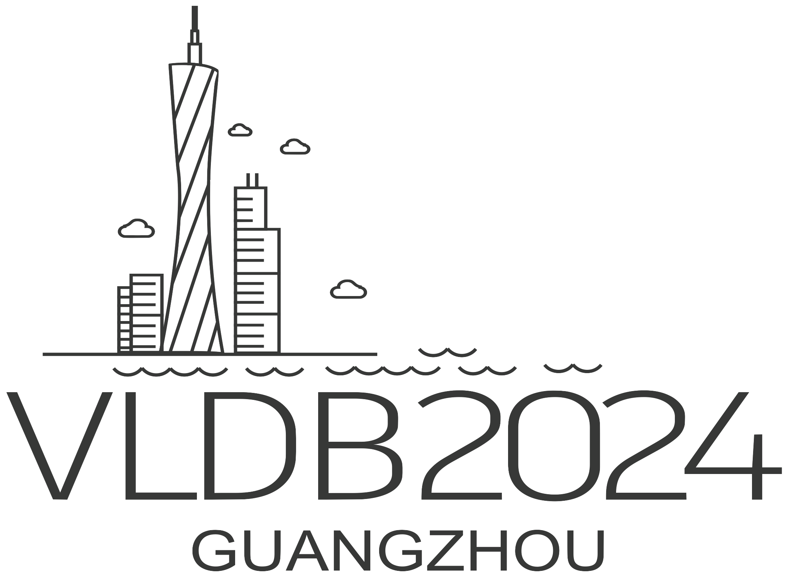

From April to August 2026, I will be a visiting researcher at New York University (NYU), engaging in joint research collaboration. This visit is funded by the Global AI Frontier Lab of IITP (Institute of Information & Communications Technology Planning & Evaluation), which supports long-term international research visits for outstanding graduate students.
KJMD 2025, the 7th Joint Korea–Japan Workshop on Management of Data, is a binational workshop that brings together researchers from Korea and Japan working on data management and data systems. The 2025 edition is held in Busan, Republic of Korea, from October 24–26, and features keynotes and presentations that foster discussion and collaboration on emerging topics in database technologies and real-world data applications.
At KJMD 2025, I serve as the program chair (workshop chair), overseeing the overall technical program and its smooth execution. I helped shape the program structure, coordinated the management and supervision of submissions, and introduced the accepted papers during the sessions. I also supervised the workshop logistics from a technical-program perspective, ensuring that the talks formed a coherent story and that both speakers and participants could engage in productive discussions.


VLDB 2024, the 50th International Conference on Very Large Databases, is one of the flagship international conferences in data management, scalable data science, and database systems. The 2024 edition took place in Guangzhou, China, from August 26–30, and offered a rich program of research and industry talks, keynotes, tutorials, demonstrations, and workshops, including the VLDB PhD Workshop dedicated to early-stage research in the community.
During VLDB 2024, I served as a session chair for the PhD Workshop. In this role, I was responsible for moderating one of the technical sessions: introducing the speakers, managing session timing, and facilitating the Q&A to encourage constructive feedback for the presenters. I also helped ensure that the session ran smoothly on site and that the discussion connected the individual PhD projects to broader research themes within the VLDB community.
During the summer of 2021, I worked as a full-stack developer intern at SK Hynix Inc. in Icheon, South Korea. My responsibilities included:
- Web interface manipulation via Selenium (Python)
- Server development using Spring Boot (Java)
- Frontend development using Node.js (JavaScript)